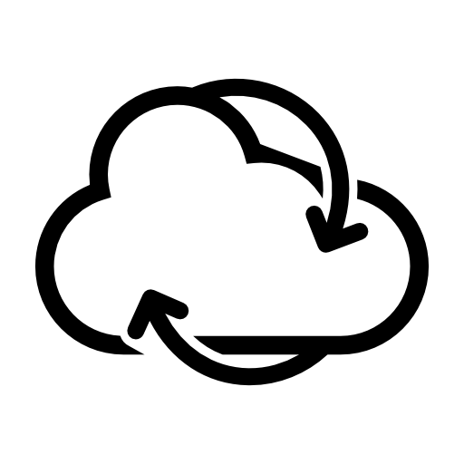

किसी भी पेज पर जहाँ आपने पढ़ना छोड़ा था उसे सहेजें और वहीं से जारी रखें — किसी भी उपकरण पर, आपके अपने Chrome खाते के ज़रिए सिंक।
Chrome में जोड़ें — मुफ़्तएक क्लिक में आपकी सटीक स्क्रॉल स्थिति सहेजी जाती है। अगली बार पेज खोलने पर यह वहीं जाने का सुझाव देता है।
आपके Chrome खाते के सिंक का उपयोग करता है, ताकि लैपटॉप पर सहेजी स्थिति डेस्कटॉप पर भी मिले।
सभी सहेजे गए पेज एक साफ़ सूची में — शीर्षक, favicon और पढ़ने की प्रगति के साथ, खोलने के लिए क्लिक करें।
अंग्रेज़ी, सरलीकृत/पारंपरिक चीनी, जापानी, कोरियाई, रूसी और हिन्दी में उपलब्ध।
कोई सर्वर नहीं, कोई ट्रैकिंग नहीं। आपका डेटा आपके ब्राउज़र और Chrome खाते में ही रहता है — हमें कभी नहीं भेजा जाता।
एक छोटा, केंद्रित एक्सटेंशन जो एक काम अच्छे से करता है और आपके रास्ते में नहीं आता।